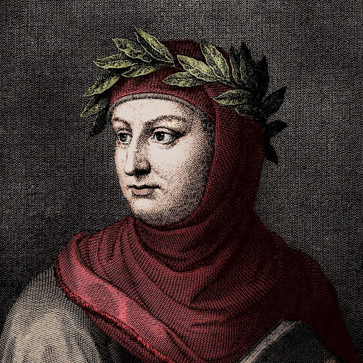
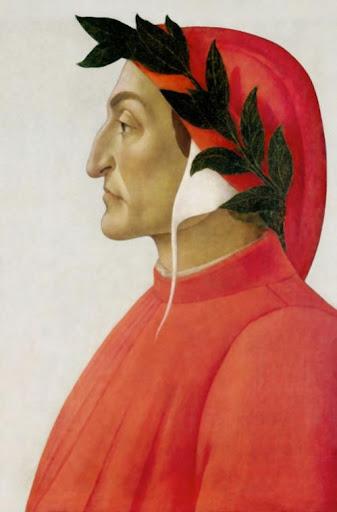

Italia ha una grande collezione di letteratura per i romani a il presente. Qui è qualche libri per Italia e i
loro autori.
Decameron- Boccaccio
Decameron da Giovanni Boccaccio è una collezione di favole ha scritto tra 1349-1353. La storia è ha focalizzato di 10 persone ciascuno dei quali dice favole. Ogni giorno prendete un'altra tema che influenza le novelle. "Avere compassione per coloro che soffrono è una qualità umana che tutti dovrebbero possedere, specialmente quelli che hanno richiesto conforto nel passato e sono riusciti a trovarla nelgi altri." Benché è credeva Boccaccio prendeva molte novella da folclore e miti, il suo favolosa scrittura, e ceppo di storia influenzava molti scrittori di il Renaissance. Il Decameron remane un pezzo di letteratura importante. La Divina Commedia- Dante
La Divina Commedia da Dante è una poesia narrativa ha scritto circa all'inizio del 14th secolo. La trama segue Dante mentre è guidato da Virgil da buio a luce. La trama ha tre sezioni Inferno, Purgatorio, e Paradiso. "Non c'e piu' dolore che ricordare la felicita' nei momenti di sofferenza" La Divina Commedia è apiamente considerò uno dei grandi opere letterarie. Non manoscrritto origniale è sopravvissuto. Il Barone Rampante- Italo Calvino
Il Barone Rampante è una novella scritto da Italo Calvino era ha pubblicato in 1957. Impostato in la metà 18th secolo, Dopo una lotta con suo padre, Cosimo scala un albero e promette a mai lascia. "Cosimo si sedeva ogni giorno nell'albero delle ceneri, osservando il prato come se potesse leggerlo dentro qualcosa che lo stava consumando da molto tempo: l'idea della distanza, della distanza che non si può colmare, dell'attesa che può durare più a lungo della vita." La trema era the il primo libro italiano che ho trovato. Però dovrebbe essere noto il libro è un po' strano o interessante.La formazione dell'Italia
Italia è un paese relativamente nuovo, con unificazione in 1861. Prima per secoli la penisola italiana è stato pieno di città-stati. Un movimento di unificazione, Risorgimento, in 1815 ha acquistato impulso. Il Canto degli Italiani ha stato prima esecuzione in 1847, in 1946 diventato il nazionale. (Youtube Video) Il regno di Sardinia alleato con Francia e Gran Bretagna in la Crimean guerra. Dopo un secondo guerro con Austria, Lombardy era libero. Risorgimento continuo in Naples e Sicily e Italia formata come monarchia senza Venzia o Roma. Un'altra guerra con l'Austria e annessione gli stati papali ha visito la penisola unito.